포트폴리오 · 한국어 슬라이드
Vision Perception Engineer · 자율주행 무인 지게차 3D Perception · 산업 배포까지 전 주기
1. Intro · Vision Model R&D
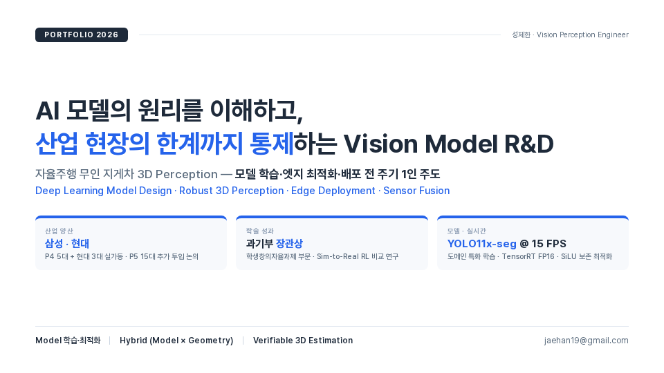
2. Main Project · 산업 배포
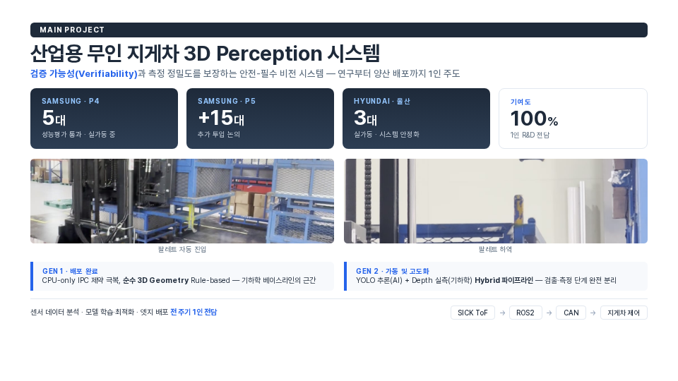
3. Research Journey · 석사 → 실무
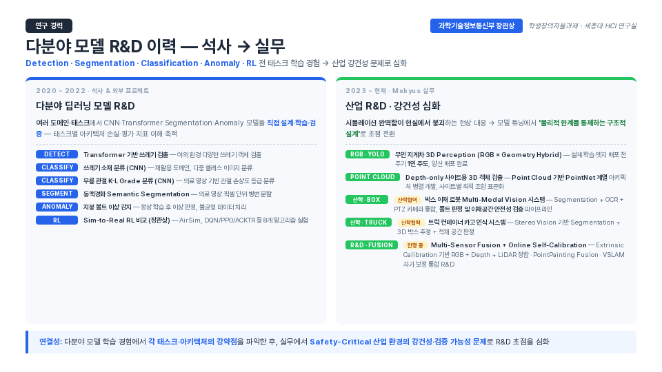
4. Award · 강화학습 자율주행 드론
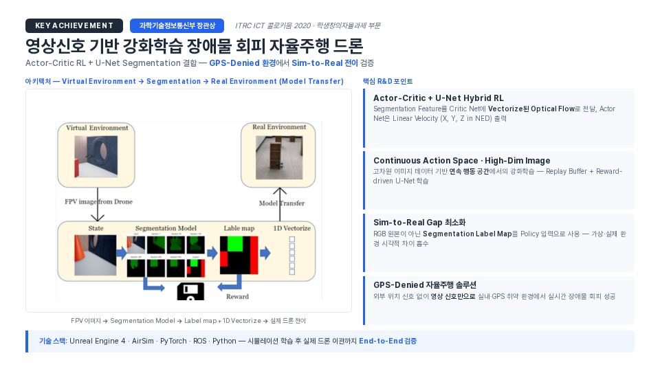
5. Award 상세 · Sim-to-Real 전이 검증
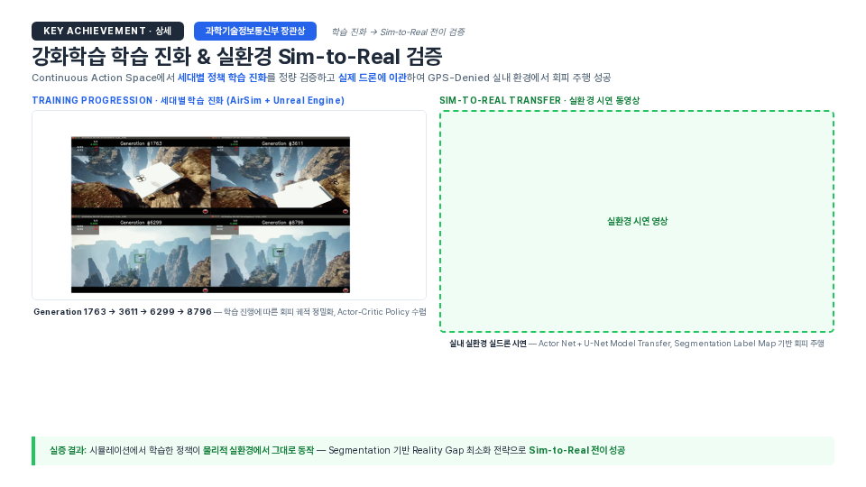
6. Research Challenges · 3대 비전 연구 과제
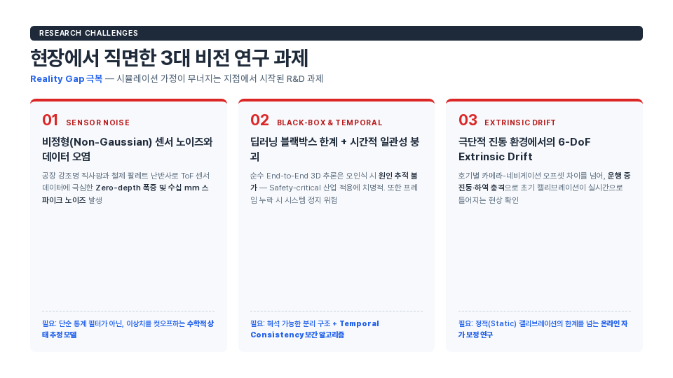
7. End-to-End Vision MLOps
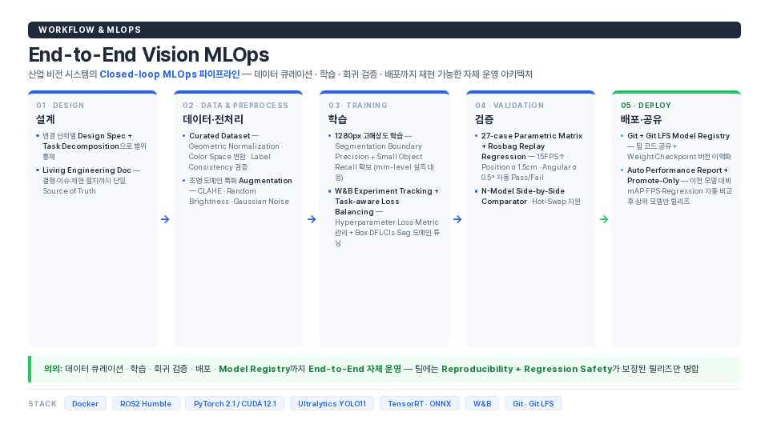
8. Research Insight · Why Hybrid Architecture
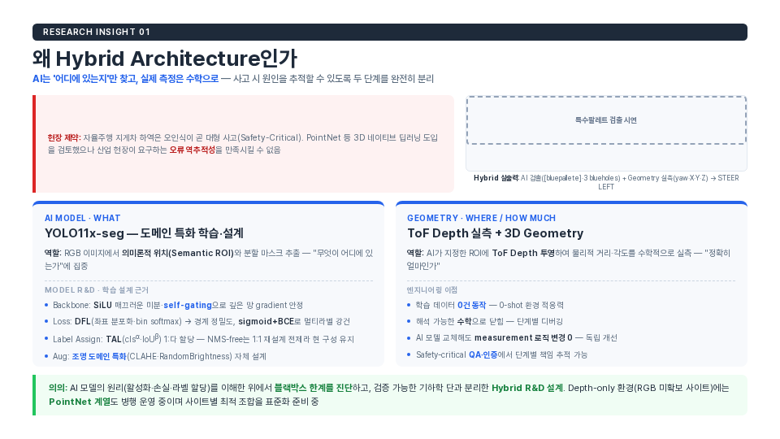
9. System Foundation · 기하학 베이스라인 (GEN 1)
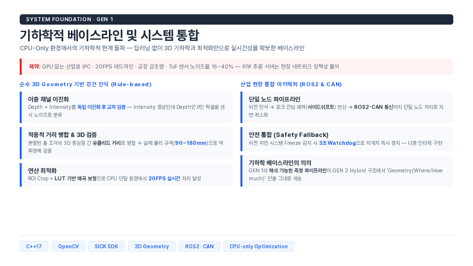
10. RI-02 · 필터 분리 → Temporal Consistency
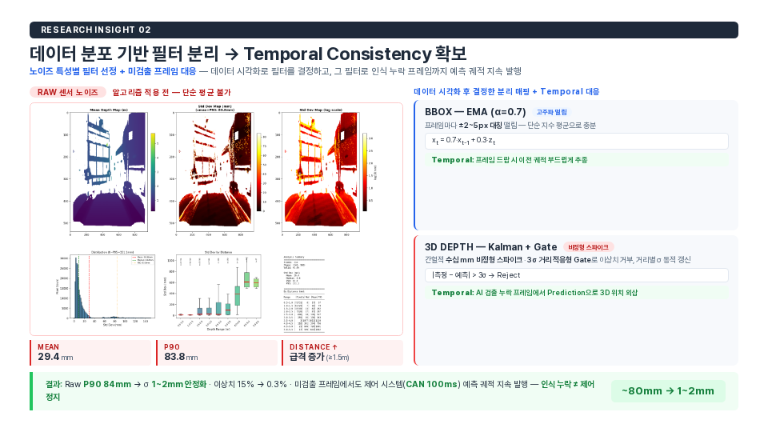
11. RI-03 · Ring Sector Median
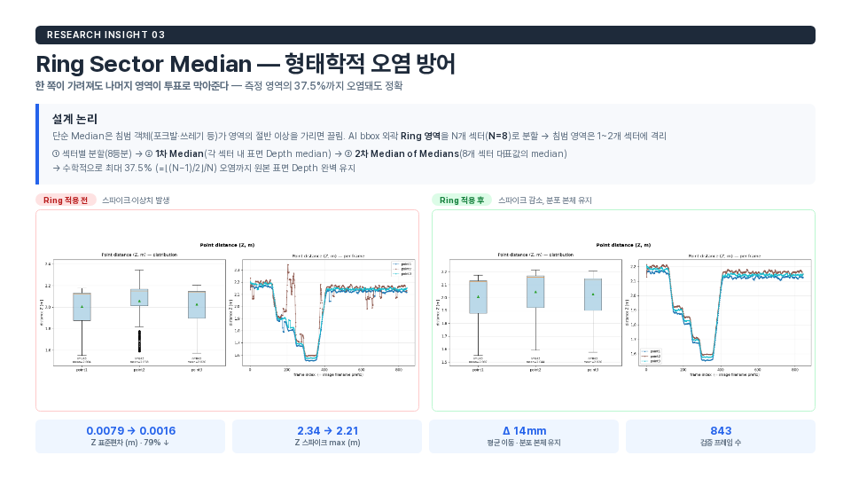
12. RI-04 · 엣지 최적화 (SiLU 보존 · CUDA 커널)
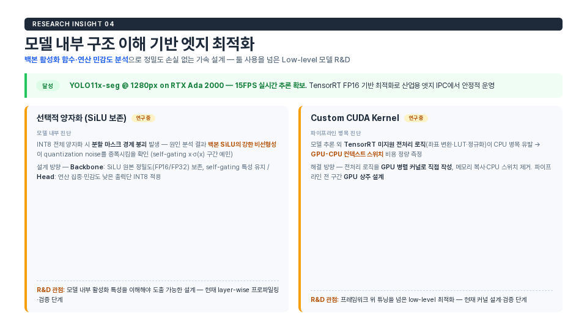
13. Edge Deployment · INT8 양자화 이슈 + GPU 파이프라인
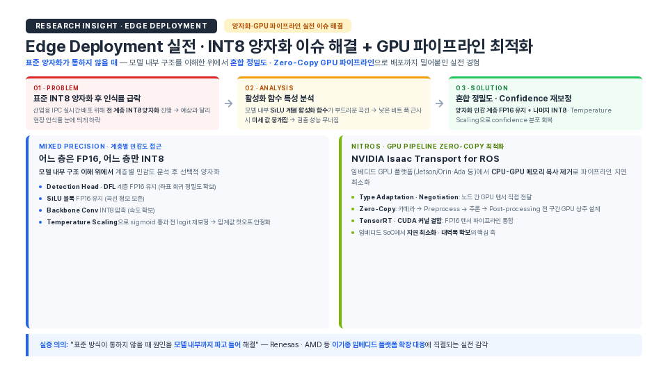
14. RI-05 · 3단계 Online Self-Calibration
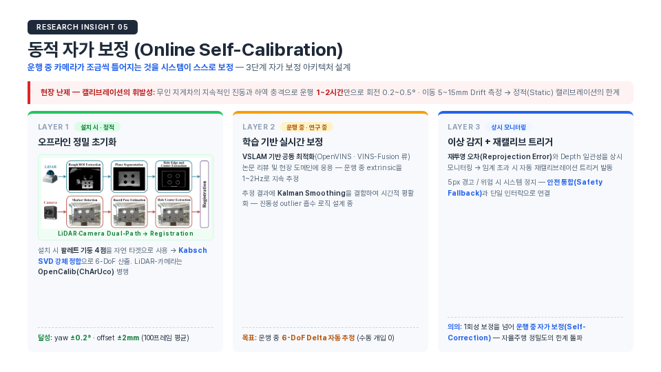
15. VSLAM · LiDAR Keypoint 자가 보정 파이프라인
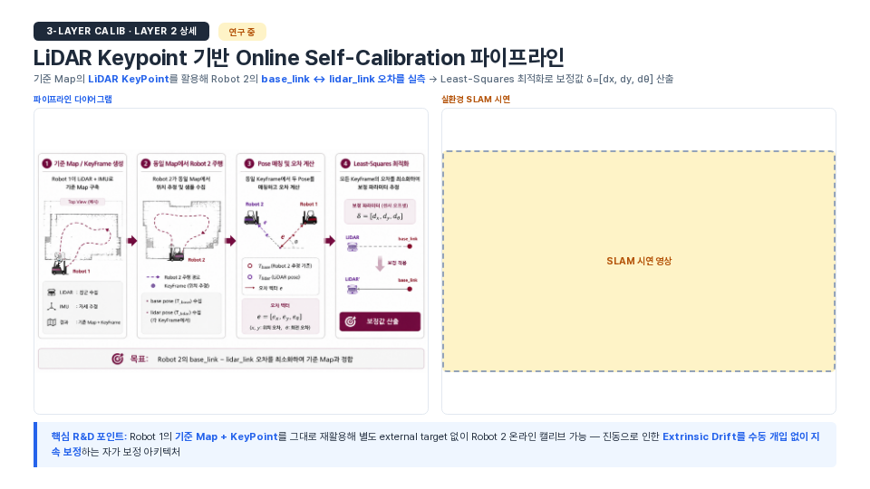
16. Multi-Sensor Fusion 통합 R&D
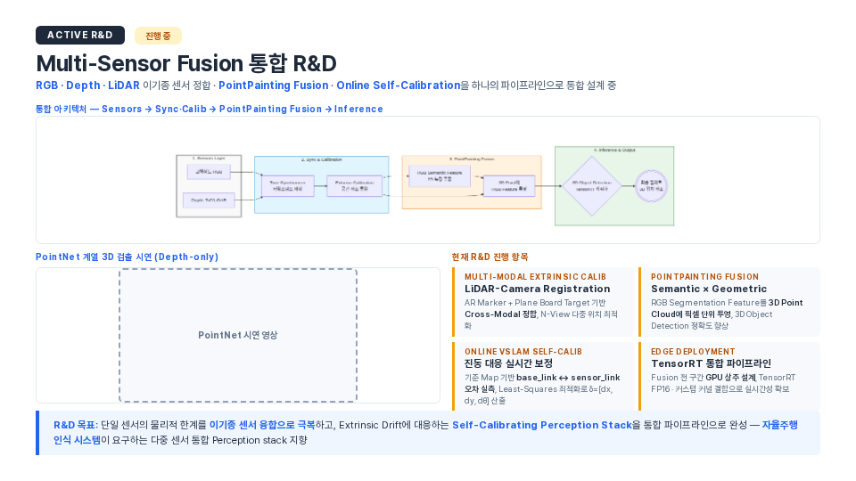
17. Isaac Sim 기반 Sim-to-Real R&D 로드맵
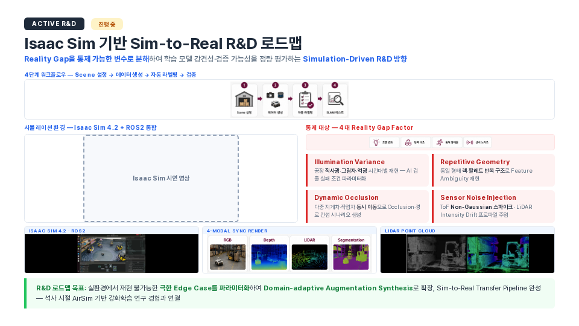
18. Outro · Vision
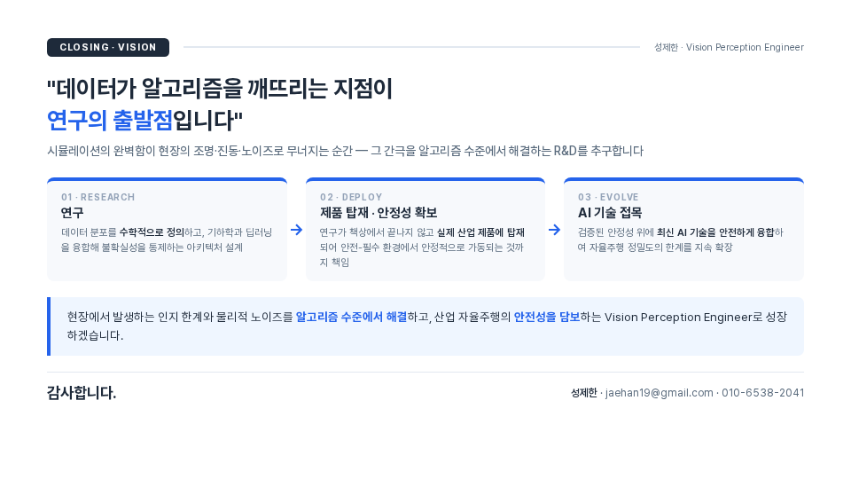